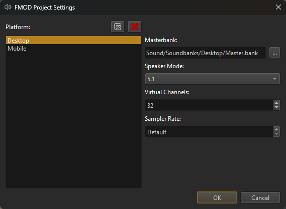

FMOD Integration
FMOD is a world class sound engine used by many AAA games. FMOD Studio is an incredibly powerful tool to manage your sounds.
ezEngine integrates FMOD with a plugin.
Important:
Be aware that FMOD is a commercial product. Before you distribute a project made with EZ that includes FMOD functionality, check the FMOD licensing options.
Video: How to set up Fmod for Sound

Using a Different FMOD SDK
To compile the FMOD plugin, parts of the official FMOD SDK are necessary. On Windows, EZ contains these files already. If you build EZ for a different platform, or want to use a newer FMOD version, follow these steps:
- Create a free account at fmod.com and sign in.
- Download and install the FMOD Studio API SDK for Windows (or whichever platform you need).
- Download and install FMOD Studio (only needed by people who want to edit FMOD projects).
- Enable FMOD in the CMake configuration.
- Clean the CMake cache and regenerate. This way CMake will pick up the installed FMOD SDK rather than the built-in one.
- Compile the engine.
Using FMOD Studio
FMOD Studio is the tool with which you edit the FMOD sound events. This tool is not provided with EZ and has to be installed separately:
- Create a free account at fmod.com and sign in.
- Download and install FMOD Studio.
FMOD Studio has a vast number of features. Describing how it works is out of scope for this documentation. Instead have a look at these resources:
There is a set of tutorials about FMOD in Unreal, which is a very good introduction. There are also several videos about FMOD in Unity. Since most of the work is done in FMOD Studio anyway, most things that you see in those videos apply equally to EZ.
- FMOD Studio for UE4 Video 1 - Getting Started
- Audio for Unity 5: Viking Village (1/5) - Getting Started
FMOD Project Settings
For project wide FMOD settings, go to Project > Plugin Settings > FMOD Project Settings...

Important:
Although you can configure profiles for multiple platforms, at the moment only the Desktop profile will be used.
The most important thing to configure here is to choose the Masterbank file. For what a master sound bank is, please refer to the FMOD documentation. If you haven't created any sound banks yet, you should start by creating an FMOD Studio project and come back when you have exported a master bank.
The other options are best left at their default values. See the FMOD documentation for details.
Once you have these things set up, you can create your first sound bank asset, through which you get FMOD sound data into the engine.
Sample Data
A sample FMOD Studio project is available under Data/Content/Sound, including pre-exported sound banks. These are also used by the sample projects, such as the Testing Chambers.
Note:
When opening the sample FMOD Studio projects from EZ, FMOD Studio may ask you to upgrade the project to the latest version. This should work fine.
Scene Editing Settings
The FMOD editor plugin adds UI elements to mute sound entirely and to adjust the master volume: